4_BLIP
BLIP¶
本笔记涵盖 Salesforce Research 的 BLIP（Bootstrapping Language-Image Pre-training）系列四代工作，展示了视觉-语言预训练从端到端训练到冻结模型 bootstrap、从固定任务到通用指令微调、从粗粒度到细粒度视觉特征的完整演进历程。
| 版本 | 论文 | 时间 | 核心变化 |
|---|---|---|---|
| BLIP-1 | arXiv:2201.12086 | 2022.01 | 端到端 VLP + CapFilt 数据清洗 + ITC/ITM/LM 三目标 |
| BLIP-2 | arXiv:2301.12597 | 2023.01 | 冻结模型 + Q-Former + 两阶段 bootstrap |
| InstructBLIP | arXiv:2305.06500 | 2023.05 | 指令感知 Q-Former + 26 数据集指令微调 |
| BLIP-3 (XGen-MM) | arXiv:2408.08872 | 2024.08 | 精选开源框架 + Perceiver Resampler 替代 Q-Former + 任意分辨率 + 多图支持 |
第0部分：四代总览¶
完整列表¶
- BLIP-1（blip.pdf，12 页，ICML 2022）：MED 统一架构 + CapFilt 数据清洗 + ITC/ITM/LM 三目标
- BLIP-2（blip2.pdf，13 页，ICML 2023）：冻结图像编码器 + Q-Former（188M 参数）+ 两阶段 bootstrap + 冻结 LLM
- InstructBLIP（instructblip.pdf，15 页，2023）：指令感知 Q-Former + 26 数据集指令微调（665K 样本）
- BLIP-3 / XGen-MM（xgen_mm.pdf，12 页，2024）：Perceiver Resampler 替代 Q-Former + Any-Resolution 任意分辨率 + 四阶段训练 + 多图支持
四代演进主线¶
- 训练范式：端到端 → Bootstrap（冻结模型）→ 指令微调 → Bootstrap + 细粒度
- 连接器：共享 Transformer → Q-Former（32 queries）→ 指令感知 Q-Former → Perceiver Resampler（替代 Q-Former，>5× 压缩比）
- 任务覆盖：固定任务 → Zero-shot → 通用指令跟随（26+ 任务）→ 理解 + 生成 + 多图
- 视觉特征：全部 patch → 32 queries（静态）→ 32 queries（指令感知）→ Perceiver Resampler 压缩（支持变长输入）
- 分辨率：固定 → 固定 → 固定 → Any-Resolution（最多 12 个 384×384 tile，长边 ≤ 1536px）
第一部分：BLIP-1¶
📄 论文链接：arXiv:2201.12086 | PDF
作者：Junnan Li, Dongxu Li, Caiming Xiong, Steven Hoi (Salesforce Research)
发表：ICML 2022
目录¶
核心要点¶
- CapFilt 数据清洗方法：提出 Captioner + Filter 的双模型框架，用 captioner 生成合成描述、用 filter 过滤低质量文本，有效解决了网络爬取数据（web text）的噪声问题
- 多模态混合编码器（MED）：统一架构同时支持基于理解的 VLM（Vision-Language Model）和基于生成的 VLGM（Vision-Language Generative Model），通过参数共享实现多任务学习
- 三目标预训练：ITC（图文对比）+ ITM（图文匹配）+ LM（语言建模），在同一个模型中同时优化理解与生成能力
- Bootstrap 思想的首次提出：通过预训练的 BLIP 模型生成伪标签，迭代提升数据质量，为后续 BLIP-2 的 bootstrap 范式奠定基础
1. 背景与动机¶
1.1 两大问题¶
视觉-语言预训练（VLP）面临两个核心挑战：
- 架构设计的割裂：
- 理解模型（如 CLIP、ALBEF）：使用双编码器架构，擅长检索和分类，但不支持生成
- 生成模型（如 SimVLM）：使用编码器-解码器架构，擅长 captioning 和 VQA，但不适合检索
-
两类模型无法共享参数，导致训练效率低
-
数据质量问题：
- 大规模图文对通常来自网络爬取（web-crawled），包含大量噪声文本
- 人工标注数据（如 COCO）质量高但规模小
- 如何高效清洗大规模噪声数据是关键瓶颈
理解任务与生成任务¶
理解任务 - 目标：对输入做出判断、选择或分类。 - 输出：通常是一个标签、分数、答案选项，或从有限集合中选出的结果。 - 例子： - Image-Text Retrieval：给定图像，从候选文本中找出最匹配的一个。 - ITM（Image-Text Matching）：判断一张图和一段文字是否匹配。 - VQA（选择题形式）：从几个选项中选出正确答案。 - Visual Reasoning：判断两个图像-文本陈述的关系（如 NLVR2）。
生成任务 - 目标：根据输入生成一段新的文本。 - 输出：一个自由形式的 token 序列，需要逐词生成。 - 例子： - Image Captioning：给一张图生成描述。 - VQA（开放式）：根据图像和问题生成自然语言答案。 - Visual Dialogue：根据图像进行多轮对话回复。
注意：有些任务可以两边归类。例如 VQA 既可以把答案当作固定集合里的类别（理解），也可以让模型自由生成文本（生成）。BLIP 的 MED 同时支持两种形式，所以能统一处理这两类任务。
1.2 BLIP-1 的核心思想¶
BLIP-1 的核心创新可以概括为两个方面：
1. MED（多模态混合编码器）
用一个统一的 BERT-like Transformer，通过不同的注意力掩码和特殊 token，同时承担三种角色： - 文本编码器：提取文本特征，用于 ITC。 - 图文编码器：融合图像和文本，用于 ITM。 - 图文解码器：自回归生成描述，用于 LM。
三种角色共享同一套参数，让理解和生成任务互相促进。
2. Bootstrap + CapFilt（自举数据清洗）
用模型自身的预测能力来提升训练数据质量，形成正向循环。
词源：bootstrap 来自英语谚语 "pull oneself up by one's bootstraps"，字面意思是"拽着自己的靴带把自己提起来"，比喻不靠外部帮助，靠自身力量把自己抬升起来。在 BLIP 中，它体现为：先用初始模型生成合成描述并过滤噪声 → 用清洗后的数据训练出更好的模型 → 再用更好的模型生成更高质量的数据 → 模型继续提升。
2. 方法¶
2.1 多模态混合编码器¶
BLIP 提出多模态混合编码器（Multimodal Mixture of Encoder-Decoder, MED），统一两类模型：

Figure 2: BLIP 的预训练模型架构和目标（相同颜色的参数共享）。提出多模态混合编码器（MED），统一了基于理解的 VLM 和基于生成的 VLGM。
MED 可以看作四个子模型组成，它们通过参数共享构成统一架构：
| 模块 | 初始化 | 输入格式 | 注意力/交互方式 | 训练目标 | 作用 |
|---|---|---|---|---|---|
| 图像编码器 (image encoder) | ImageNet 预训练 ViT | 原始图像 | ViT 自注意力 | 无单独命名损失，通过 ITC/ITM/LM 接收梯度 | 提取视觉 token 序列 |
| 文本编码器 (text encoder) | BERT | [CLS] + 文本 token |
标准自注意力 | ITC | 提取文本特征，与图像特征对齐 |
| 图文编码器 (image-grounded text encoder) | BERT | [Encode]/[ENC] + 文本 token |
双向自注意力 + cross-attention（关注图像编码器输出） | ITM | 判断图文对是否匹配 |
| 图文解码器 (image-grounded text decoder) | BERT | [Decode]/BOS + 文本 token |
因果自注意力 + cross-attention（关注图像编码器输出） | LM | 自回归生成图像描述 |
参数共享：后三个文本相关模块共享同一套 BERT-like Transformer 参数，通过不同的注意力掩码和特殊 token 切换功能；图像编码器独立。
2.2 三目标预训练¶
BLIP 同时优化三个目标：
| 目标 | 类型 | 作用 | 注意力掩码 |
|---|---|---|---|
| ITC（Image-Text Contrastive） | 对比学习 | 对齐图像和文本表示，支持检索 | 单模态编码 + 对比损失 |
| ITM（Image-Text Matching） | 二分类 | 判断图文对是否匹配，支持细粒度理解 | 多模态融合编码 + 分类头 |
| LM（Language Modeling） | 生成 | 给定图像生成描述文本，支持 captioning | 多模态生成解码 + 自回归损失 |
ITC 与 ITM 的区别¶
两者都用于对齐图像和文本，但侧重点不同：
| 维度 | ITC | ITM |
|---|---|---|
| 任务类型 | 对比学习 | 二分类 |
| 模态交互 | 无 cross-attention，图像/文本分别编码 | 有 cross-attention 深度融合 |
| 核心目标 | 配对样本靠近、非配对样本远离 | 判断给定图文对是否匹配 |
| 关注样本 | 所有 in-batch 负样本 | 重点学习 hard negatives |
| 输出 | 相似度分数 | 匹配概率 |
简言之：ITC 负责粗粒度全局对齐，ITM 负责细粒度判别性对齐。
为什么 ITM 重点学习 hard negatives？
- 负样本（negatives）：在一个 batch 中，对于某张图像，其他不匹配的文本都是负样本。
- Easy negatives：与图像语义明显不相关的文本，模型很容易判断它们不匹配。
- Hard negatives：与图像语义相关、看起来很像正样本但实际上不匹配，容易让模型混淆的负样本。例如一张"狗在草地上"的图，正样本是"A dog is sitting on grass"，hard negative 可能是"A dog is running on beach"——都有狗，但场景不同。
- 在 BLIP 中：ITM 的 hard negatives 是从 ITC 的相似度分数中采样得到的。ITC 会给 batch 内所有图文对打分，分数高但不配对的那些就是 hard negatives，送给 ITM 做二分类训练。这样 ITM 就专门学习区分"高度相似但不匹配"的边界情况。
三个损失函数¶
下面三个损失都作用于 batch 内样本。其中 ITC 属于对比学习，其基础是 InfoNCE 损失。
0. InfoNCE 损失（噪声对比估计）
InfoNCE（Noise Contrastive Estimation，中文常译为噪声对比估计）把对比学习看作一个 \(N\) 路分类任务：给定一个 query，模型需要从 \(N\) 个候选中找出唯一匹配的正样本，其余候选被当作"噪声"。其一般形式为：
其中 \(s(q, k)\) 是 query 与候选的相似度，\(k_+\) 为正样本，\(\{k_-\}\) 为负样本，\(\tau\) 为温度系数。\(\tau\) 越小，分布越尖锐，训练越"硬"；\(\tau\) 越大，分布越平缓，训练越稳定。通过最大化正样本的相对概率，模型学会拉近正样本、推开负样本。
设批次大小为 \(N\)，图像编码器输出 \(v_i\)，文本编码器输出 \(w_i\)，温度系数为 \(\tau\)。
1. ITC（Image-Text Contrastive Loss）
ITC 本质上就是 InfoNCE 在图文对齐上的应用。图文相似度用点积或余弦相似度计算，再经过温度缩放：
对称形式的 ITC 同时优化图像→文本和文本→图像两个方向：
❓BLIP-1 实现 ITC 时使用了 momentum encoder 和 momentum queue（queue size 57600），与 ALBEF 一致，用于扩大负样本集合并稳定对比学习。
2. ITM（Image-Text Matching Loss）
二分类交叉熵损失。
对图文对 \((I_i, T_i)\) 是否匹配进行二分类，\(y_i \in \{0,1\}\) 为标签（1=匹配，0=不匹配）：
其中 \(p_i = \sigma(W^\top h_i^{[\text{Encode}]} + b)\)，\(h_i^{[\text{Encode}]}\) 是图文编码器中 [Encode] token 的输出。
3. LM（Language Modeling Loss）
标准的自回归交叉熵，最大化给定图像和历史文本条件下当前 token 的概率： $$ \mathcal{L}{\text{LM}} = -\frac{1}{N}\sum, I_i\right) $$}^{N}\sum_{t=1}^{L_i}\log P\left(t_i^{(t)} \mid t_i^{(<t)
其中 \(t_i^{(t)}\) 是第 \(i\) 条文本的第 \(t\) 个 token，\(L_i\) 是文本长度。
联合训练的优势： - ITC 学到的对齐能力帮助 ITM 和 LM 更好地理解图文关系 - LM 学到的生成能力使模型能产出流畅的文本 - ITM 学到的细粒度匹配能力提升整体表示质量
2.3 CapFilt 数据清洗¶
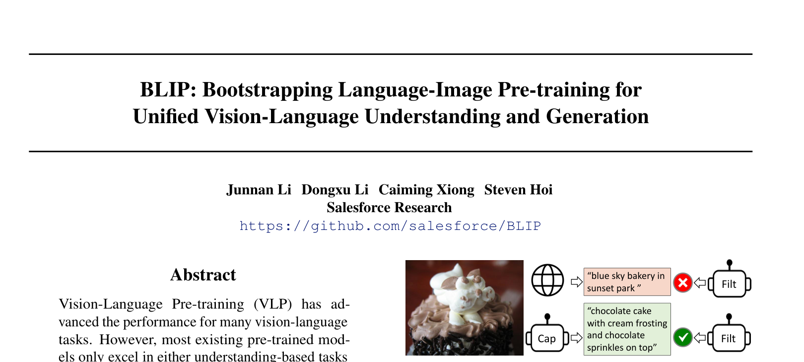
Figure 1: BLIP 使用 Captioner（Cap）生成合成描述，使用 Filter（Filt）过滤低质量的网络文本。为什么要清洗数据¶
大规模图文预训练数据通常来自网络爬取（如 Conceptual Captions），这些数据的文本质量很差： - 很多文本与图像内容弱相关或不相关 - 存在大量语法错误、关键词堆砌、广告文本 - 高质量的人工标注数据（如 COCO）规模又太小
CapFilt 的核心思路是：用模型自身的能力来清洗和增强数据，而不是直接信任网络文本。
两个组件¶
CapFilt 由两个在 COCO 等高质量数据上微调的 BLIP 模型组成：
- Captioner（Cap）：图像描述生成器
- 输入：网络图像
- 输出：多条高质量的合成描述（synthetic captions）
-
作用：为每张图补充更多、更干净、更贴近图像内容的文本
-
Filter（Filt）：图文匹配质量评估器
- 输入：图像 + 文本（网络文本或合成文本）
- 输出：该图文对是否匹配的分数
- 作用：过滤掉低质量的噪声文本
完整流程¶
- 生成：对每张网络图像，Captioner 生成 \(N\) 条合成描述，与原始网络文本一起组成候选池。
- 过滤：Filter 对候选池中的每条文本打分，按阈值保留高质量样本：
- 人工标注数据：全部保留（质量最高）
- 合成文本：保留 Filter 打分高的
- 网络文本：只保留打分高的，大量噪声被过滤掉
- 重训：用清洗后的数据集重新训练 BLIP。
- 迭代：用新的 BLIP 重新训练 Captioner 和 Filter，再清洗一轮数据，形成 bootstrap 正循环。
 Figure 3: BLIP 的学习框架。引入 captioner 为网络图像生成合成描述，引入 filter 过滤低质量的网络文本和合成文本。
Figure 3: BLIP 的学习框架。引入 captioner 为网络图像生成合成描述，引入 filter 过滤低质量的网络文本和合成文本。
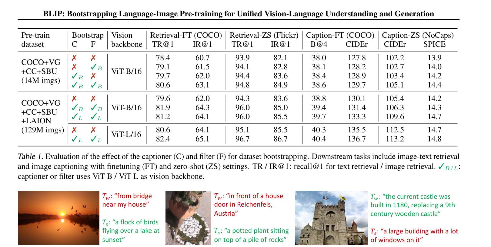
Figure 4: 网络文本（Tw）和合成文本（Ts）的示例。绿色文本被 filter 接受，红色文本被过滤。为什么有效¶
- 合成文本比网络文本更干净：Captioner 在 COCO 上微调后，生成的描述与图像内容高度相关。
- 过滤机制去噪：Filter 能识别出与图像不匹配的文本，避免模型学到错误对应关系。
- 数据量与质量兼得：既保留了大规模网络图像，又用合成描述和过滤机制提升了文本质量。
- Bootstrap 思想：模型越好 → 生成的合成描述越好、过滤越准 → 下一轮训练数据越好 → 模型更好。
2.4 训练流程¶
BLIP-1 采用两阶段训练范式：先在大规模数据上预训练通用能力，再在下游任务上微调。
Stage 1：大规模预训练¶
- 数据：CapFilt 清洗后的网络图文对 + 保留的人工标注数据（如 COCO）。
- 损失：同时优化 ITC、ITM、LM 三个目标。
- 目的：
- ITC：把图像和文本映射到同一特征空间，建立粗粒度对齐。
- ITM：学习细粒度图文匹配，区分 hard negatives。
- LM：学会根据图像生成流畅、相关的文本描述。
这一阶段让模型获得通用的视觉-语言理解和生成能力。
Stage 2：下游任务微调¶
将 Stage 1 的预训练权重加载到模型，根据不同任务选择 MED 的不同模块：
| 任务 | 主要使用模块 | 说明 |
|---|---|---|
| Image-Text Retrieval | 图像编码器 + 文本编码器（ITC） 图文编码器（ITM） |
用 ITC 做相似度排序，ITM 可辅助精排 |
| Image Captioning | 图文解码器（LM） | 自回归生成图像描述 |
| VQA | 图文编码器 + 图文解码器 | 把问题作为文本输入，先融合图像信息，再生成答案 |
微调阶段数据量小，但任务标注质量高，能把 Stage 1 学到的通用能力适配到具体任务。
3. 总结¶
4.1 核心贡献¶
- MED 统一架构：首次在一个模型中同时支持理解和生成任务，参数共享提升效率
- CapFilt 数据清洗：用模型自身能力提升数据质量，开创了 bootstrap 范式
- 三目标联合训练：ITC + ITM + LM 的联合优化使模型具备全面的多模态能力
4.2 局限性¶
- 端到端训练计算成本高（需要同时训练 ViT 和 Transformer）
- CapFilt 需要迭代训练，流程复杂
- 模型规模受限于训练资源，无法充分利用更大的预训练 LLM
4.3 历史定位¶
BLIP-1 是多模态模型统一完成不同任务的早期成功尝试。它的基本思路很直接：既然编码器适合理解任务、解码器适合生成任务，那就用一个共享 Transformer 同时承担这两种角色，按任务切换使用。
从这个角度看，BLIP-1 有两点值得注意的历史意义：
- 参数共享的初步一体化：MED 不是简单拼接多个独立模型，而是通过注意力掩码和特殊 token 让三种功能共享同一套参数，迈出了多模态统一建模的一步。
- 尚未进入 LLM 时代：BLIP-1 发表于 2022 年 1 月，文本 backbone 仍是 BERT 规模，没有以 LLM 为中心。与后来的多模态大模型（如 BLIP-2、LLaVA、GPT-4V）相比，它的任务切换仍显机械，一体化程度也有限。
但 BLIP-1 开源、效果好，为后续多模态大模型的发展奠定了重要基础——尤其是 MED 的架构思想和 CapFilt 的 bootstrap 数据清洗范式，在后续工作中不断被继承和扩展。
第二部分：BLIP-2¶
📄 论文链接：arXiv:2301.12597 | PDF
作者：Junnan Li, Dongxu Li, Silvio Savarese, Steven Hoi (Salesforce Research)
发表：ICML 2023
核心要点¶
- 提出 Bootstrap VLP 范式：首次成功地将冻结的图像编码器和冻结的 LLM 同时有效地用于视觉-语言预训练，开创了"冻结单模态模型 + 轻量桥接模块"的新研究范式
- Q-Former + 两阶段预训练：设计了一个轻量级 Transformer（188M 参数）作为信息瓶颈，通过 ITC+ITM+ITG 三目标让 queries 学会提取语言相关的视觉表示，再注入冻结的 LLM
- 极高的计算效率：可训练参数仅 188M，远少于同期所有 SOTA 方法（如 Flamingo 的 10.2B），单台 16-A100 机器 9 天内可完成最大模型的全部预训练
- 全面超越 Flamingo：在 zero-shot VQAv2 上超越 Flamingo80B 8.7%，同时可训练参数少 54 倍
- 缓解灾难性遗忘：通过信息瓶颈设计，Q-Former 提取与文本最相关的视觉信息，减少 LLM 的对齐负担，有效保护了 LLM 原有的语言能力
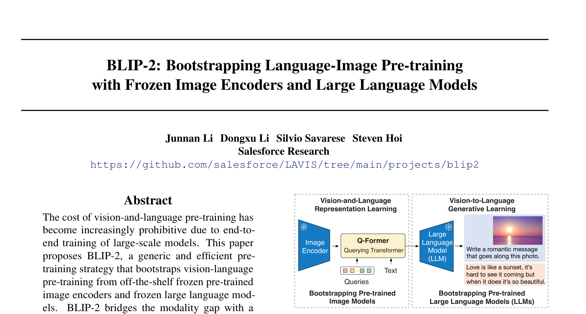
Figure 1: BLIP-2 框架概览——冻结的图像编码器 + Q-Former + 冻结的 LLM1. 背景与动机¶
2022 年底 ChatGPT 的爆火，进一步证明了文本模型具备较强的通用性。同期/稍早的多模态工作 Flamingo 也以 LLM 为核心，通过交叉注意力机制让 LLM 关注视觉特征，来填补文本与视觉之间的 gap。
BLIP-2 同样选择冻结 LLM、专注于跨模态对齐。但与 Flamingo 不同，它设计了位于 LLM 外部的 Q-Former，将视觉特征转换为 LLM 可理解的 soft prompt，从而避免修改 LLM 内部结构，大幅降低可训练参数。
1.1 核心挑战¶
论文指出当前视觉-语言预训练（VLP）面临三大挑战：
"The cost of vision-and-language pre-training has become increasingly prohibitive due to end-to-end training of large-scale models."
- 计算成本过高：现有 SOTA 方法（如 BEIT-3、OFA 等）需要端到端地联合训练大规模视觉模型和语言模型，预训练代价极其昂贵
- 无法灵活利用现成的单模态预训练模型：视觉社区和 NLP 社区已有大量高质量预训练模型（如 CLIP ViT、OPT、FlanT5），但端到端 VLP 方法难以直接复用它们
- 灾难性遗忘（Catastrophic Forgetting）：如果直接微调 LLM 来做视觉-语言对齐，LLM 原有的语言能力会严重退化
1.2 与 BLIP-1 的关系¶
BLIP-2 是 BLIP-1 的直接后续工作。关键区别在于：
- BLIP-1：采用端到端的视觉-语言预训练，同时训练图像编码器和语言模型
- BLIP-2：不再端到端训练，而是将图像编码器和 LLM 都冻结（frozen），仅训练一个轻量级的 Q-Former 模块来桥接两个冻结模型之间的模态鸿沟
核心思想是"bootstrap"（自举/引导）——从已有的冻结单模态模型出发，用最小的可训练参数实现跨模态对齐。
2. 方法¶
2.1 Q-Former¶
Q-Former（Querying Transformer）是 BLIP-2 的核心可训练模块：
"Q-Former is a lightweight transformer which employs a set of learnable query vectors to extract visual features from the frozen image encoder. It acts as an information bottleneck between the frozen image encoder and the frozen LLM."
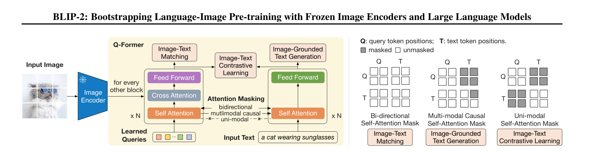
Figure 2: Q-Former 架构与第一阶段的三个预训练目标（ITC、ITG、ITM）整体结构¶
Q-Former 是一个轻量级的 BERT-like Transformer（从 bert-base-uncased 初始化），外加 32 个可学习的 query tokens。它不是两个独立的子模块，而是一个统一的模型。理解 Q-Former 的关键在于：它既能单独处理 queries，也能单独处理文本，还能把 queries 和文本拼接在一起处理。通过这三种不同的输入组合，Q-Former 在第一阶段分别完成 ITC、ITM、ITG 三个目标，在第二阶段只输出 queries 作为视觉软提示给 LLM。
输入组合的三种模式¶
- 只输入 queries：此时 queries 通过 cross-attention 关注冻结图像编码器的输出，从图像特征中提取信息。这是第二阶段连接 LLM 时的主要模式。
- 只输入 text：此时 Q-Former 退化为一个文本编码器，输出文本的上下文表示。第一阶段 ITC 中的文本侧编码就采用这种模式。
- 同时输入 queries 和 text：queries 和 text tokens 在 embedding 层被拼接为
[queries; text]的序列，然后一起进入 Transformer。此时 cross-attention 仍然只作用于 queries，而 self-attention 则同时覆盖 queries 和 text。第一阶段 ITM 和 ITG 采用这种模式。
为什么这样设计¶
这种统一架构的好处是： - 参数共享最大化：queries 和 text 共享 self-attention，使模型学到的对齐和生成能力可以互相迁移。 - 信息瓶颈：queries 是固定数量的视觉摘要 token，而 text 是变长的语言序列。通过让 text token 直接 attention 到 queries，模型不需要直接处理高维、可变长度的原始图像特征。 - 训练目标统一：同一个模型通过切换输入和掩码，就能分别完成对比、匹配、生成三类任务。
Learnable Queries¶
- 使用 32 个可学习的 query embeddings 作为 Q-Former 的 query 输入。
- 每个 query 维度为 768，与 Q-Former 隐藏层维度一致。
- Query 被视为模型参数的一部分，在训练过程中不断更新。
- 输出表示记为 Z，大小为 32 × 768。
"The size of Z (32 × 768) is much smaller than the size of frozen image features (e.g. 257 × 1024 for ViT-L/14). This bottleneck architecture works together with our pre-training objectives into forcing the queries to extract visual information that is most relevant to the text."
queries 的作用可以类比为信息检索中的"查询请求"：它们不是从图像中被动读取所有特征，而是主动通过 cross-attention 向图像特征"提问"，筛选出与当前任务最相关的视觉信息。ITC、ITM、ITG 三个损失共同约束这些查询向量，使它们学会提取"与文本语义匹配"的视觉内容。
Self-Attention：Queries 与 Text 共享¶
Q-Former 内部只有一套 self-attention 参数。当 queries 和 text 同时输入时，它们会进入同一个 self-attention 计算：
- queries 可以看到彼此，也可以看到 text tokens；
- text tokens 可以看到彼此，也可以看到 queries；
- 具体能看到多少，由注意力掩码控制。
这种共享设计让 queries 和 text 能够充分交互。例如，在 ITM 中，queries 携带的视觉信息与 text tokens 携带的语言信息可以双向融合，从而判断图文是否匹配；在 ITG 中，text token 可以 attend 到 queries 获取视觉上下文，从而生成与图像相关的描述。
Cross-Attention：只作用于 Queries¶
cross-attention 是 Q-Former 与冻结图像编码器之间的桥梁：
- 插入频率：默认每隔一个 transformer block 插入一层 cross-attention，即在 12 层中大约有 6 层包含 cross-attention。
- 作用对象：cross-attention 只作用于 queries，text tokens 不直接参与 cross-attention。这意味着 text 不会直接看到原始图像 patch 特征，只能通过 queries 间接获取视觉信息。
- 设计意图：强制 queries 成为视觉信息的唯一"代言人"。模型必须训练 queries 把图像中所有与文本相关的信息都压缩到这 32 个向量中，然后 text 再去读取这些 queries。
FFN：Queries 与 Text 分离¶
虽然 self-attention 共享，但 Q-Former 为 queries 和 text tokens 配备了各自独立的前馈网络（FFN）：
- queries 使用一套 FFN（在源码中对应带
_query后缀的参数）； - text tokens 使用另一套 FFN（标准 BERT 的 FFN）。
- 初始化时，query 的 FFN 从 BERT 原始 FFN 复制，但在训练过程中会逐渐分化。
为什么要分离？因为 queries 和 text tokens 的角色不同：queries 是视觉摘要，text tokens 是语言 token，它们需要的非线性变换可能不同。分离 FFN 给模型更大的灵活性，让 queries 可以专门优化视觉信息提取，text 可以专门优化语言表示。
初始化与参数量¶
- 主体初始化：Q-Former 的 Transformer 主体从
bert-base-uncased加载预训练权重，使其具备良好的语言先验。 - Cross-attention 初始化：新增的 cross-attention 层随机初始化，因为 BERT 原本没有 cross-attention。
- Query tokens 初始化：32 个 query embeddings 随机初始化，从零开始学习。
- 总参数量：188M。
Q-Former 比 BERT-base 更大吗？ 是的。BERT-base 约有 110M 参数，而 Q-Former 达到 188M。新增的参数主要来自两个部分：一是 queries 的独立 FFN（12 层，每层额外一个 intermediate_query + output_query），大约增加 57M；二是每隔一层插入的 cross-attention（约 6 层），大约增加 14M。32 个 learnable query embeddings 本身只有约 25K 参数，可以忽略。因此 Q-Former 虽然继承 BERT-base 的语言先验，但为了同时服务 queries 和 text、并建立与冻结图像编码器的 cross-attention，总参数量明显大于 BERT-base。
三种训练模式¶
| 目标 | 输入方式 | Query-Text 交互方式 | 设计目的 |
|---|---|---|---|
| ITC | queries 和 text 分别走两次独立 forward | 不在同一个 self-attention 中计算，天然隔离 | 让图像表示和文本表示分别独立编码，再计算相似度。如果它们共享 self-attention，相似度计算会信息泄露，失去对比意义。 |
| ITG | queries 和 text 拼接，text 自回归生成 | Queries 可见彼此但不可见 text；每个 text token 可见所有 queries 及其前面的 text tokens | 让模型像语言模型一样自回归生成文本，同时通过 queries 获取视觉上下文。queries 作为视觉前缀，对所有 text token 可见。 |
| ITM | queries 和 text 拼接在同一个 forward 中 | 所有 queries 和 text tokens 互相可见（双向 attention） | 让视觉信息和文本信息充分融合，从而判断当前图文对是否匹配。 |
任务头¶
Q-Former 的 Transformer 主体是共享的，但三个预训练目标需要不同的输出语义，因此分别为它们配备了独立的任务头：
-
ITC 头：一对线性投影层，分别把 query 输出和文本
[CLS]输出映射到一个共同的低维对比空间。图像侧投影把 32 个 query 向量变成对比向量，文本侧投影把[CLS]向量也变成同一空间的向量；图文相似度通过计算两组向量之间的余弦相似度得到。因为每个图像有 32 个 query，实际计算时会取与文本表示最相似的那个 query 作为该图像的代表。 -
ITM 头：一个二分类线性层，输入是 query 向量，输出两个 logit。在 ITM 中，queries 和 text 拼接后经过双向 self-attention 充分交互，每个 query 都获得了融合后的图文信息；随后每个 query 独立过这个二分类头，最后把所有 query 的 logit 取平均，作为整张图与整段文本是否匹配的预测分数。
-
ITG 头：一个自回归语言建模头，本质上把每个隐藏状态投影到词表维度，用来预测下一个文本 token。ITG 采用 queries 与 text 拼接的输入方式，text token 只能看到前面的 text 和全部 queries，从而迫使模型在生成每个词时都从 queries 中读取视觉信息。这个头与 Q-Former 内部的文本生成能力是同一套参数，只是通过不同的输入掩码切换到生成模式。
这三个头都挂接在同一个 BERT-like Transformer 之上。第一阶段训练时，模型会根据当前目标选择对应的输入组合和任务头，三个损失同时反向传播并更新共享的 Transformer 参数。这种设计让 Q-Former 既能学习图文对齐（ITC），又能学习细粒度匹配（ITM），还能学习基于图像的文本生成（ITG），而这些能力最终都沉淀在共享的 query 表示中。
第一阶段 vs 第二阶段的 Q-Former¶
第一阶段（表示学习）： - Q-Former 连接到冻结的图像编码器。 - 根据 ITC/ITM/ITG 的需要，灵活选择输入组合： - ITC：queries 和 text 分别编码； - ITM/ITG：queries 和 text 拼接编码。 - 通过三个损失训练 queries，使其学会从图像中提取语言相关的视觉信息。
第二阶段（生成学习）： - Q-Former 仍然连接到冻结的图像编码器，但不再输入任何外部文本。 - 只输入 32 个 queries，输出 32 个提纯后的视觉 token。 - 这些视觉 token 经过一个线性投影层，映射到 LLM 的文本嵌入维度，作为 soft visual prompts 拼接到 LLM 输入前面。 - 用户的文本 prompt 直接输入 LLM，不经过 Q-Former。
两个阶段 Q-Former 的权重是共享并继续微调的：第一阶段学到的"如何从图像中提取语言相关信息"的能力，在第二阶段被用来生成高质量视觉提示，驱动冻结 LLM 完成视觉-语言生成任务。
2.2 第一阶段：表示学习¶
"In the representation learning stage, we connect Q-Former to a frozen image encoder and perform pre-training using image-text pairs. We aim to train the Q-Former such that the queries can learn to extract visual representation that is most informative of the text."
连接方式：Q-Former 连接到冻结的图像编码器（ViT-L/14 from CLIP 或 ViT-g/14 from EVA-CLIP）。
三个联合优化目标（继承自 BLIP-1，共享相同输入格式和模型参数）：
（1）Image-Text Contrastive Learning (ITC) - 学习对齐图像表示和文本表示，最大化互信息 - 将 query 输出 Z 与文本 [CLS] token 的输出 t 进行对比 - 由于 Z 包含多个 query 输出，先计算每个 query 与 t 的相似度，取最高值作为图文相似度 - queries 和 text 分别走两次独立的 Q-Former forward，避免信息泄露 - 由于图像编码器冻结，每 GPU 可容纳更多样本，因此使用 in-batch negatives 代替 BLIP-1 中的 momentum queue
（2）Image-grounded Text Generation (ITG) - 训练 Q-Former 在给定图像条件下生成文本 - 由于架构不允许冻结图像编码器与 text tokens 直接交互，生成文本所需的信息必须先被 queries 提取，再通过 self-attention 传递给 text tokens - 这迫使 queries 提取捕获文本所有信息的视觉特征 - 使用 multimodal causal self-attention mask（类似 UniLM） - 用新的 [DEC] token 替换 [CLS] token 以标识解码任务 - 与 ITC 取最大相似度、ITM 对 query logit 取平均不同，ITG 不聚合多个 query 为一个标量。所有 32 个 query 作为固定长度的视觉前缀与 text tokens 拼接，每个 text token 在预测下一个词时都能看到全部 queries，把视觉信息当作上下文来生成文本
ITG 与 BLIP-1 的 LM 是什么关系？
两者本质上是同一个目标函数，都是自回归的文本生成损失 \(-\log P(t_t \mid t_{<t}, \text{image})\)，也都使用因果自注意力掩码。
区别在于架构： - BLIP-1 的 LM：文本 decoder 直接 cross-attention 到完整图像 patch 特征。 - BLIP-2 的 ITG：文本 token 先 attention 到压缩后的 query 向量，query 再 cross-attention 到图像特征。这强制 query 提取出生成文本所需的全部视觉信息。
因此可以把 ITG 看作 LM 在 Q-Former bottleneck 架构下的等价变体。
（3）Image-Text Matching (ITM) - 二分类任务：预测图文对是否匹配 - 使用 bi-directional self-attention mask，所有 queries 和 text 互相可见 - 每个 query embedding 送入二分类线性分类器，logits 取平均作为匹配分数 - 采用 hard negative mining 策略
预训练设置：250k steps，batch size 2320 (ViT-L) / 1680 (ViT-g)。
2.3 第二阶段：生成学习¶
"In the generative pre-training stage, we connect Q-Former (with the frozen image encoder attached) to a frozen LLM to harvest the LLM's generative language capability."
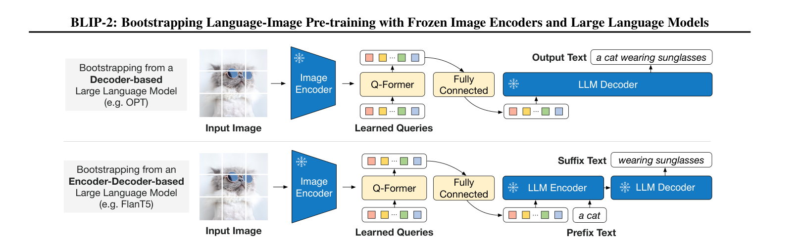
Figure 3: BLIP-2 的第二阶段视觉到语言生成预训练，从冻结的大语言模型中引导生成能力连接方式： - 使用一个全连接层（FC layer） 将 Q-Former 输出的 query embeddings Z 线性投影到 LLM 文本嵌入的维度 - 投影后的 query embeddings 被前置拼接（prepended） 到输入文本嵌入之前 - 它们充当 soft visual prompts，使 LLM 以 Q-Former 提取的视觉表示为条件
"Since the Q-Former has been pre-trained to extract language-informative visual representation, it effectively functions as an information bottleneck that feeds the most useful information to the LLM while removing irrelevant visual information. This reduces the burden of the LLM to learn vision-language alignment, thus mitigating the catastrophic forgetting problem."
两种 LLM 类型的适配：
| LLM 类型 | 代表模型 | 输入结构 | 注意力方式 | 预训练损失 | 具体做法 |
|---|---|---|---|---|---|
| Decoder-based | OPT | [visual prompts] + [text prompt] + [target text] 拼成一条完整序列 |
整个序列采用因果自注意力 | Language Modeling loss | 视觉 prompt、文本 prompt 和目标文本全部输入 decoder-only 的 OPT；训练时把视觉 prompt 和文本 prompt 对应的 label 设为 -100，只让模型学习预测后面的目标文本 |
| Encoder-Decoder-based | FlanT5 | Encoder: [visual prompts] + [prefix]；Decoder: [suffix] |
Encoder 内部是双向注意力，Decoder 是因果自注意力 | Prefix Language Modeling loss | 文本显式拆成 prefix（条件/问题）和 suffix（目标/答案）；prefix 与视觉 prompt 一起输入 encoder；decoder 以 encoder 输出为上下文，自回归生成 suffix，损失只作用于 suffix 的 token |
两种适配方式的核心差异可以概括如下：
-
Decoder-based（OPT）——标准语言建模损失：视觉 prompt 与文本 prompt、目标文本拼接成一个完整序列，整体输入给 decoder-only 的 OPT。OPT 用因果自注意力逐个预测下一个 token，训练时 prompt 部分不参与损失，损失只作用于目标文本。它适用于直接生成一段完整文本，例如图像描述。
-
Encoder-Decoder-based（FlanT5）——Prefix 语言建模损失：文本被拆成 prefix（输入/问题）和 suffix（目标/答案）。prefix 和视觉 prompt 一起输入 encoder，encoder 内部是双向注意力；decoder 以 encoder 输出为条件，自回归生成 suffix，损失只作用于 suffix 的 token。它适用于有明确输入-输出结构的任务，例如 VQA（问题作为 prefix，答案作为 suffix）。
简单说：OPT 是整个序列一起因果生成；FlanT5 是 encoder 双向理解 prefix+视觉信息，decoder 专门生成 suffix。
预训练设置：80k steps，batch size 1920 (OPT) / 1520 (FlanT5)。
训练效率：使用单台 16-A100 (40G) 机器，最大模型（ViT-g + FlanT5-XXL）第一阶段不到 6 天，第二阶段不到 3 天。
2.4 Q-Former vs 线性投影¶
论文虽未直接用一段话对比"线性投影 vs Q-Former"，但从多处论述可以归纳出以下原因：
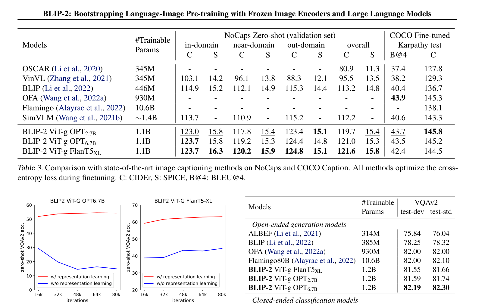
Figure 5: 视觉-语言表示学习对性能的影响——没有第一阶段会导致性能大幅下降和灾难性遗忘-
🚗信息瓶颈的必要性：冻结图像编码器的输出（如 ViT-L/14 的 257×1024）包含大量与文本无关的视觉信息。简单线性投影无法有效筛选信息，会将大量噪声传给 LLM，加重 LLM 的对齐负担并导致灾难性遗忘。Q-Former 通过 32 个 learnable queries + bottleneck 架构 + 三目标预训练，强制提取"与文本最相关的视觉信息"
-
两阶段设计的需要：Q-Former 不仅要做维度映射，还要在第一阶段学会"理解"视觉-语言对齐关系（通过 ITC+ITM+ITG），然后在第二阶段将这种理解传递给 LLM。简单线性投影没有这种学习能力🚗
-
实验证据：Figure 5 显示，如果没有第一阶段的表示学习（相当于退化为类似 Flamingo Perceiver Resampler 的纯生成学习方式），性能大幅下降，OPT 甚至出现严重的灾难性遗忘。这说明 Q-Former 配合两阶段预训练的设计是不可替代的
-
固定长度输出：Q-Former 输出固定数量的特征（32 个），与输入图像分辨率无关，这为连接不同 LLM 提供了统一的接口
3. 与相关方法的对比¶
vs CLIP¶
- CLIP 是双编码器架构，仅支持检索类任务，不支持生成任务
- BLIP-2 通过 Q-Former + LLM 实现了生成能力，且在检索任务上也超越 CLIP
vs BLIP-1¶
- BLIP-1 端到端训练，可训练参数多（385M-583M）
- BLIP-2 冻结单模态模型，仅训练 188M 参数的 Q-Former，计算效率大幅提升
- BLIP-2 在所有 benchmark 上全面超越 BLIP-1
vs Flamingo¶
需要明确的是，BLIP-2 把 Flamingo 当作相关工作和对比基线，而不是灵感来源。两者属于同一研究方向（连接冻结视觉编码器与冻结 LLM）下的不同技术路线。
- Flamingo：在 LLM 内部插入新的 cross-attention 层，需要在数十亿图文对上预训练这些新层，可训练参数高达 10.2B。
- BLIP-2：在 LLM 外部使用 Q-Former 作为信息瓶颈，仅需 108M 可训练参数，在 zero-shot VQAv2 上超越 Flamingo80B 8.7%。
- 对齐方式不同：Flamingo 仅使用 language modeling loss 做对齐，BLIP-2 认为这不足以桥接模态鸿沟，因此采用两阶段策略（先表示学习，再生成学习），效果更好。
vs Frozen❓¶
- Frozen 直接微调图像编码器使其输出作为 LLM 的 soft prompts，对齐效果有限
- BLIP-2 通过 Q-Former 的两阶段预训练实现了远优于 Frozen 的对齐效果（VQA acc: 65.0 vs 29.6）
4. 总结¶
4.1 核心贡献🚗¶
-
提出了通用的 Bootstrap VLP 范式：首次成功地将冻结的图像编码器和冻结的 LLM 同时有效地用于视觉-语言预训练，开创了"冻结单模态模型 + 轻量桥接模块"的新研究范式
-
设计了 Q-Former + 两阶段预训练策略：
- 第一阶段通过 ITC+ITM+ITG 三目标让 queries 学会提取语言相关的视觉表示
- 第二阶段通过 FC 层将 queries 输出作为 soft visual prompts 注入 LLM
-
信息瓶颈设计有效缓解了灾难性遗忘
-
极高的计算效率：可训练参数约 188M（与 Q-Former 参数量一致），远少于同期 SOTA 方法（如 Flamingo80B 的 10.2B，约 54 倍），单台 16-A100 机器 9 天内可完成最大模型的全部预训练。论文 Table 2 中部分 LLM 组合（ViT-g + OPT6.7B / FlanT5XXL）列出的可训练参数约为 103M–108M，但论文未明确解释该口径与 Q-Former 188M 的差异，因此统一以 188M 作为 BLIP-2 可训练参数的代表性数字。
-
Zero-shot instructed image-to-text generation：展示了遵循自然语言指令的零样本图像到文本生成能力，包括视觉知识推理、视觉对话、视觉常识推理、故事创作等涌现能力
-
可扩展性验证：证明了更强的图像编码器或更强的 LLM 都能带来性能提升，验证了该框架能持续受益于单模态领域的进展
4.2 局限性¶
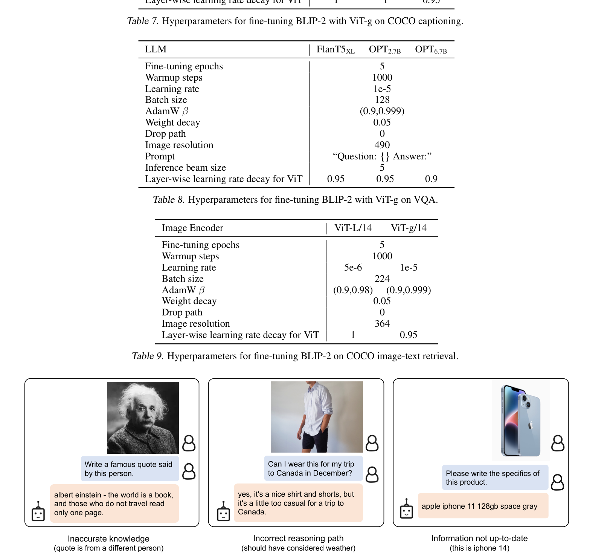
Figure 6: BLIP-2 在指令式 zero-shot 图像到文本生成中的错误输出示例- 未观察到 in-context learning 能力提升 VQA 性能，归因于预训练数据每条样本仅含单个图文对
- 图像到文本生成可能因 LLM 知识不准确、推理路径错误或信息过时而产生错误输出（如 Figure 6 所示）
- 继承了冻结 LLM 的风险（攻击性语言、社会偏见、隐私泄露等）
- 视觉特征静态化：Q-Former 提取的 32 个 query embeddings 是任务无关的，无论用户指令如何变化，提取的视觉表示都相同，限制了模型根据不同指令关注图像不同方面的能力
第三部分：InstructBLIP¶
📄 论文链接：arXiv:2305.06500 | PDF
作者：Wenliang Dai, Junnan Li, Dongxu Li 等 (Salesforce AI Research, HKUST, NUS)
发表：2023
核心要点¶
- 提出指令感知的 Q-Former：首次将指令信息注入视觉特征提取过程，使模型能够根据自然语言指令动态地从图像中提取任务相关的视觉表示
- 构建大规模视觉语言指令微调数据集：整合 26 个数据集、约 665K 条样本，覆盖图像和视频的多种任务类型，并设计了多样化的指令模板
- 实现通用视觉语言模型：通过指令微调和指令感知机制，InstructBLIP 在 26+ 个基准测试上展现了强大的零样本泛化能力，显著超越了 BLIP-2 和 LLaVA
- 核心洞察：视觉特征的提取不应该是静态的，而应该根据用户的意图动态调整
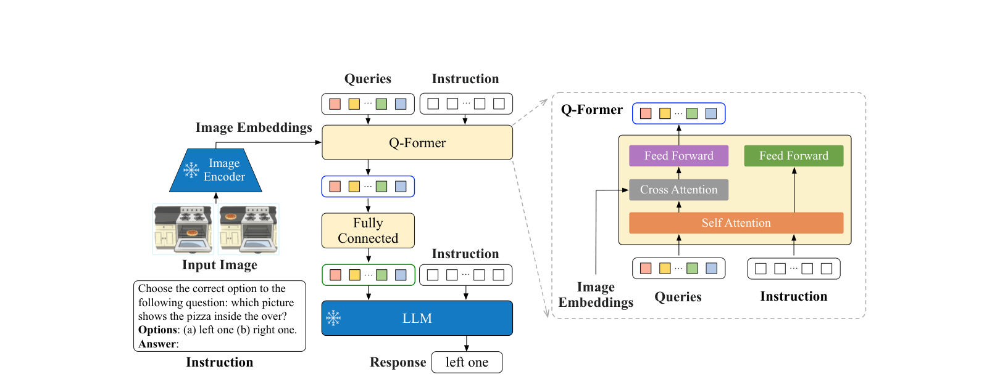
Figure 3: InstructBLIP 的模型架构。Q-Former 提取指令感知的视觉特征，根据文本指令适应不同的视觉语言任务。1. 背景与动机¶
1.1 BLIP-2 的局限性¶
BLIP-2 虽然在 zero-shot 任务上表现出色，但存在两个关键问题：
-
缺乏通用性：BLIP-2 主要面向固定的、预定义的任务（如 image captioning、VQA），无法灵活地根据用户的自然语言指令来完成多样化的视觉语言任务
-
视觉特征静态化：Q-Former 使用一组固定的 learnable queries 从视觉编码器中提取视觉特征。这些 queries 是任务无关的，无论用户想要什么信息，提取的视觉表示都是相同的
1.2 指令微调的成功启示¶
NLP 领域中，instruction tuning 被证明能显著提升 LLM 的泛化能力和对人类意图的理解能力（如 InstructGPT、FLAN）。InstructBLIP 将这一思想引入视觉语言领域。
2. 方法¶
2.1 指令感知 Q-Former¶
这是 InstructBLIP 最核心的技术创新。
原始 Q-Former 的问题¶
BLIP-2 中的 Q-Former 使用一组固定的 learnable queries 从视觉编码器中提取视觉特征。这些 queries 是任务无关的，无论用户想要什么信息，提取的视觉表示都是相同的。这导致模型无法根据不同指令关注图像的不同方面。
指令感知机制¶
InstructBLIP 把指令文本的 token 和 learnable queries 一起输入同一个 Q-Former，让 queries 在 self-attention 阶段就能感知到指令内容，从而提取与当前指令相关的视觉特征。具体做法如下：
-
共享词嵌入层：指令文本和 BLIP-2 中的普通文本一样，先经过 Q-Former 的 word embedding 层得到 token embeddings。不存在一个独立于 Q-Former 之外的指令编码器。
-
queries 与指令 token 拼接：32 个 learnable query embeddings 与指令 token embeddings 在序列维度上拼接为
[queries; instruction]，然后一起进入 Q-Former 的 Transformer 层。 -
通过 self-attention 交互：在每一层中，queries 和 instruction tokens 共享同一套 self-attention。这意味着 queries 可以看到所有指令 token，指令 token 也可以看到所有 queries，二者在 self-attention 中完成信息融合。Queries 借此“理解”指令意图。
-
Cross-attention 仍只作用于 query 位置：Q-Former 中的 image cross-attention 与 BLIP-2 保持一致，仍然只把前 32 个 query 位置作为 query 去 attend 冻结图像编码器的输出，并每隔一个 transformer block 插入一层。Instruction tokens 虽然和 queries 在同一个序列中参与 self-attention，但它们本身并不直接对图像做 cross-attention。并没有新增的“instruction cross-attention”层。
-
效果：经过指令条件化后，queries 会根据指令语义“知道”应该从图像中提取什么信息。例如：
- 当指令是“描述图中人物的表情”时，queries 会更关注人脸区域；
- 当指令是“识别图中的文字”时，queries 会更关注文本区域。
架构¶
- Q-Former：直接继承 BLIP-2 的 Q-Former，包含 32 个 learnable queries、12 层 BERT-like Transformer，self-attention 由 queries 和指令 token 共享，cross-attention 每隔一层插入且只面向冻结图像编码器。
- 指令输入：用户的自然语言指令被 tokenize 后，与 queries 拼接进入 Q-Former；没有新增独立的指令编码器或指令 cross-attention。
- 输出投影：最终输出的 32 个 query embeddings 通过一个全连接投影层映射到 LLM 的输入空间，作为 LLM 的 soft visual prompt。
- 冻结组件：视觉编码器和 LLM 在指令微调阶段保持冻结，只有 Q-Former 和投影层参与训练。
2.2 指令微调数据的构建¶
数据集¶
InstructBLIP 构建了涵盖 26 个数据集的指令微调语料库，覆盖以下任务类型：
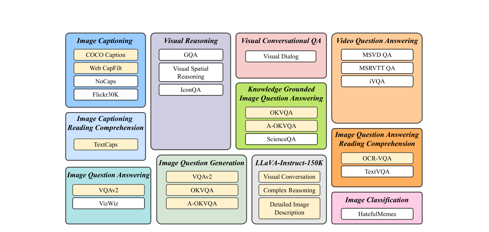
Figure 2: 用于视觉语言指令微调的任务及其对应的数据集。数据集涵盖了多样化的任务类型和指令形式。| 任务类别（论文中的 11 类） | 数据集示例 | 说明 |
|---|---|---|
| Image Captioning | COCO Caption, NoCaps, Flickr30K | 图像描述生成 |
| Image Captioning with Reading Comprehension | TextCaps | 需阅读图中文字后生成描述 |
| Visual Reasoning | GQA, VSR, IconQA | 视觉推理 |
| Image Question Answering | VQAv2, VizWiz | 视觉问答 |
| Knowledge-grounded Image QA | OK-VQA, A-OKVQA, ScienceQA | 知识驱动的视觉问答 |
| Image Question Answering with Reading Comprehension | OCR-VQA, TextVQA | 需阅读图中文字的问答 |
| Image Question Generation | VQAv2, OKVQA, A-OKVQA | 根据图像生成问题 |
| Visual Conversational QA | Visual Dialog | 视觉对话问答 |
| Video Question Answering | MSVD-QA, MSRVTT-QA, iVQA | 视频问答 |
| Image Classification | HatefulMemes | 图像分类 |
| LLaVA-Instruct-150K | LLaVA-Instruct-150K | 开放式指令跟随对话与推理 |
指令模板设计¶
对于每个数据集，作者设计了多样化的指令模板，将原始数据转换为指令-响应对：
- 同一任务多种表述：例如图像描述可以有 "Describe this image." "What is shown in this picture?" "Provide a detailed description of the image." 等多种指令形式。
- 任务特定的指令：VQA 任务直接使用问题作为指令；分类任务使用 "What is this?" 等。
- 上下文丰富的指令：部分指令包含额外上下文信息，如 "Based on the image, answer the following question: ..."
数据量与划分¶
- 共整合 26 个公开数据集，覆盖 11 类任务。
- 其中 13 个 held-in 数据集用于指令微调，13 个 held-out 数据集用于 zero-shot 泛化评估。
- 视频数据（MSVD-QA、MSRVTT-QA、iVQA）在输入时均匀采样 4 帧，分别过图像编码器和 Q-Former，再把视觉特征拼接后送入 LLM。
2.3 训练流程¶
InstructBLIP 的训练分为两大阶段：BLIP-2 前置预训练（直接继承）+ InstructBLIP 指令微调。
前置基座：来自 BLIP-2 的两阶段预训练¶
这两步不是 InstructBLIP 新提出的，而是直接复用 BLIP-2 的训练流程：
Stage 1: 表示学习¶
- 使用 ITC、ITM、ITG 三个目标在大规模图文对上进行预训练。
- 这一阶段的 Q-Former 可输入 text tokens 与 queries 共同处理，但尚未引入指令感知机制，提取的是静态、任务无关的视觉特征。
Stage 2: 生成对齐¶
- 冻结视觉编码器（EVA-CLIP ViT-g/14）和 LLM（FlanT5 / OPT），仅微调 Q-Former 与末尾投影层。
- Q-Former 不再输入外部文本，只输出 32 个固定视觉 token 拼接至 LLM 输入端，完成模态空间对齐。
- InstructBLIP 的 FlanT5 变体直接加载 BLIP-2 的 FlanT5 预训练权重；Vicuna 变体由于 BLIP-2 原模型没有 Vicuna checkpoint，因此需要用 Vicuna 按照同样的 BLIP-2 流程重新做一遍前置预训练。
指令微调阶段¶
- 冻结组件：视觉编码器（EVA-CLIP ViT-g/14）和 LLM（Vicuna / FlanT5）均保持冻结，全程不参与梯度更新。
- 可训练组件：Q-Former（将指令文本与 queries 一起输入，共享 self-attention，无独立指令编码器，也无新增 instruction cross-attention）和投影层。🚗
- 训练目标：标准的 next-token prediction loss，输入组合为「指令文本 + 指令感知视觉 tokens」，预测模型的回复文本。
- 训练数据：13 个 held-in 数据集，采用平方根平衡采样（按数据集大小的平方根成比例采样，并辅以人工权重调整）。
- 超参数：最大 60K steps；batch size 视模型大小分别为 192（FlanT5-XL 3B）、128（Vicuna-7B）、64（FlanT5-XXL 11B / Vicuna-13B）；learning rate 1e-4；optimizer AdamW；weight decay 0.05；warmup 1K steps；cosine decay；使用 16 张 A100 40G，全部训练在 1.5 天内完成。
两种 LLM 变体¶
- InstructBLIP-Vicuna：基于 Vicuna-7B/13B
- InstructBLIP-FlanT5：基于 FlanT5-XL/XXL
5. 总结¶
5.1 核心贡献¶
-
提出指令感知的 Q-Former：首次将指令信息注入视觉特征提取过程，使模型能够根据自然语言指令动态地从图像中提取任务相关的视觉表示，这是架构层面的重要创新
-
构建大规模视觉语言指令微调数据集：整合 26 个公开数据集、覆盖 11 类图像/视频任务（13 个 held-in 用于微调、13 个 held-out 用于 zero-shot 评估），并设计了多样化的指令模板，为视觉语言指令微调研究提供了宝贵的资源
-
实现通用视觉语言模型：通过指令微调和指令感知机制，InstructBLIP 在 26+ 个基准测试上展现了强大的零样本泛化能力，显著超越了 BLIP-2 和 LLaVA，推动了通用 VLM 的发展
-
系统的消融研究与分析：深入分析了指令感知机制、数据多样性、LLM 选择等因素对模型性能的影响，为后续研究提供了重要参考
-
开源贡献：开放了模型权重、代码和数据集，促进了社区研究
5.2 局限性¶
- 对于某些任务（如精细的物体计数、空间关系推理），指令感知机制的提升有限
- 仍然受限于 Q-Former 输出的 32 个 token 数量，无法提供像素级的细粒度视觉信息
第四部分：BLIP-3 (XGen-MM)¶
📄 论文链接：arXiv:2408.08872 | PDF
作者：Le Xue, Manli Shu, Anas Awadalla, Jun Wang, An Yan, Senthil Purushwalkam, Honglu Zhou, Viraj Prabhu, Yutong Dai, Michael S Ryoo, Shrikant Kendre, Jieyu Zhang, Can Qin, Shu Zhang, Chia-Chih Chen, Ning Yu, Juntao Tan, Tulika Manoj Awalgaonkar, Shelby Heinecke, Huan Wang, Yejin Choi, Ludwig Schmidt, Zeyuan Chen, Silvio Savarese, Juan Carlos Niebles, Caiming Xiong, Ran Xu（Salesforce AI Research, University of Washington）
发表：2024
核心要点¶
- 精选开源框架：BLIP-3 不仅是一个模型，而是一个精选框架（curated framework），包含精选数据集、训练配方、模型架构及一系列开源 LMMs（4B 和 14B 规模，含 base 和 instruction-tuned 版本），解决开源社区在高质量基座模型、训练细节和数据集方面的缺失，推动 LMM 研究的透明度和可复现性
- 架构简化：Perceiver Resampler 替代 Q-Former：用更简单、更可扩展的 Perceiver Resampler 替代复杂的 Q-Former，训练目标从 BLIP-2 的三种损失（ITM + ITC + ITG）简化为单一的自回归文本生成损失，大幅降低训练复杂度
- 任意分辨率策略（Any-Resolution）：采用动态高分辨率图像编码，将图像切分为多个 patch 分别编码，再与缩略图拼接，最多支持 12 个 patches，长边最大 1536px，在保留细节和控制 token 数量之间取得平衡
- 高效 Token 压缩与多图支持：Perceiver Resampler 使用 128 个可学习 latent queries 对每个图像 patch 进行压缩（例如 384×384 tile 的 729 个 SigLIP patch tokens → 128 个视觉 tokens，压缩比约 5.7×），显著降低 LLM 处理多图或高分辨率图像时的计算开销，使模型能够高效支持交错多模态数据（interleaved image-text）
- 四阶段训练流程：基础分辨率预训练 → 高分辨率预训练 → 单图指令微调 → 交错多图指令微调，逐步引入高分辨率和多图能力
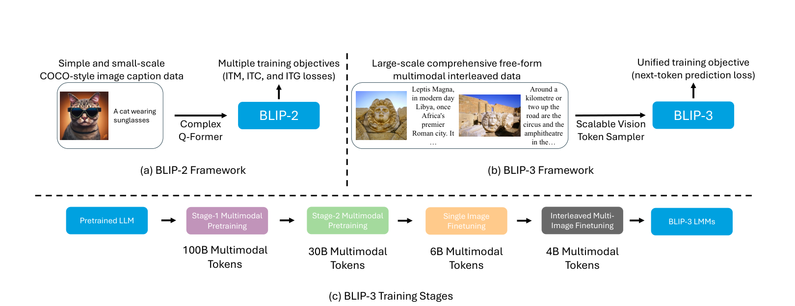
Figure 1: BLIP-3 框架（b）与现有 LMM 框架（a）的对比。BLIP-3 用 Perceiver Resampler 替代 Q-Former，训练目标简化为单一的自回归文本生成损失。1. 背景与动机¶
1.1 BLIP-2 的局限性¶
BLIP-2 开创了”冻结单模态模型 + 轻量连接器”的 bootstrap 范式，但在实际应用中暴露了几个问题：
- Q-Former 结构复杂：需要三种预训练目标（ITM, ITC, ITG），训练流程繁琐，难以扩展
- 仅支持单图输入：无法处理交错多图（interleaved image-text）数据格式
- 固定分辨率：无法支持高分辨率图像理解，丢失细节信息
- 训练目标复杂：多种损失函数联合优化，调参难度大
1.2 与 BLIP-2 的关系¶
XGen-MM / BLIP-3 是 BLIP-2 的直接继承者和重大升级： - 延续：保持了”冻结视觉编码器 + 连接器 + 冻结/微调 LLM”的整体范式 - 突破：用更简单、更可扩展的 Perceiver Resampler 替代复杂的 Q-Former，大幅简化训练流程 - 目标升级：在理解和生成文本的基础上，进一步增强了 OCR、图表理解、空间定位等细粒度视觉理解能力
1.3 开源社区的痛点¶
论文指出开源社区在 LMM 研究方面面临三大痛点： 1. 高质量基座模型稀缺：多数 SOTA 模型闭源，开源模型质量参差不齐 2. 训练细节不透明：论文往往省略关键的训练配方（training recipe），难以复现 3. 数据集不公开：高质量训练数据难以获取，阻碍研究进展
BLIP-3 的目标是提供一个完整的、可复现的开源框架，推动 LMM 研究的透明度和可复现性。
2. 方法¶
2.1 架构对比¶
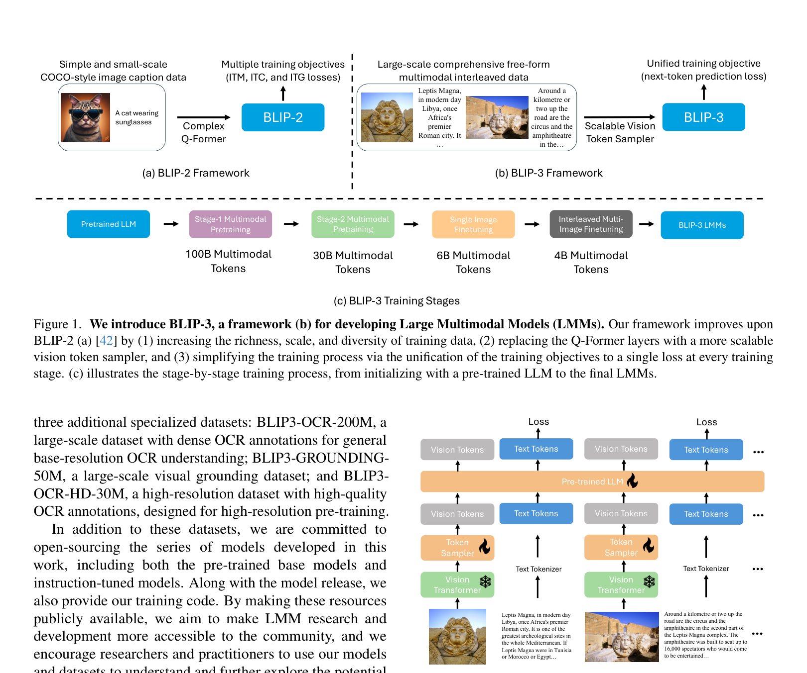
Figure 2: BLIP-3 架构概览。Free-form 输入（图像+文本）通过 Perceiver Resampler 压缩后输入 LLM，支持多模态理解和生成。三大组件：
- Vision Encoder：google/siglip-so400m-patch14-384（冻结），提取视觉特征
- Vision Token Sampler：Perceiver Resampler（替代 Q-Former），使用 128 个可学习 latent queries 对每个图像 patch 做交叉注意力压缩
- LLM：Phi-3 系列（例如开源脚本使用 microsoft/Phi-3-mini-4k-instruct；论文报告 4B / 14B 两个规模）。与 BLIP-2 不同，源码中 set_trainable() 把除 Vision Encoder 外的所有参数（含 LLM 与 Perceiver Resampler）都设为可训练
🚗相比 BLIP-2 的主要改进：
| 维度 | BLIP-2 | BLIP-3 |
|---|---|---|
| 连接器架构 | Q-Former（复杂，需要 ITM+ITC+ITG 三种预训练目标） | Perceiver Resampler（简单，仅需自回归生成损失） |
| 训练目标 | 多种损失函数（ITM, ITC, ITG） | 单一的自回归文本生成损失 |
| 输入支持 | 仅单图 | 交错多图（interleaved image-text） |
| 分辨率处理 | 固定分辨率 | 任意分辨率（Any-Resolution） |
| Token 压缩 | 32 个固定 queries | 每个图像 patch 用 128 个 queries，压缩比约 5.7×（729→128） |
| LLM 训练策略 | 冻结 LLM，只训练 Q-Former | 除 Vision Encoder 外全部可训练（含 LLM） |
| 开源程度 | 部分开源 | 完整开源框架（数据集 + 训练配方 + 模型架构 + 模型权重） |
结构创新总结🚗¶
-
用 Perceiver Resampler 替代 Q-Former
不再依赖 ITM/ITC/ITG 三种预训练目标，仅靠单一自回归文本损失训练视觉-语言连接器，结构更简单、更易扩展。 -
Any-Resolution 高分辨率编码
图像被切分为多个 384×384 的 tile（论文 Stage-2 最多 12 个，长边最大 1536px），每个 tile 独立过冻结的 SigLIP ViT，再与全局缩略图拼接，兼顾细节保留与 token 数量控制。 -
patch-wise token 压缩
每个 tile 产生 27×27=729 个 SigLIP patch tokens，经 Perceiver Resampler 压缩为 128 个视觉 tokens，压缩比约 5.7×，使高分辨率或多图输入能在 LLM 中高效处理。 -
交错多图（interleaved image-text）支持
模型能处理自由形式的多图-文本交错序列，支持多图推理、跨图关系理解与多模态上下文学习。 -
端到端训练（除 Vision Encoder）
与 BLIP-2 冻结 LLM 不同，BLIP-3 只冻结视觉编码器，LLM 与 Perceiver Resampler 一起参与训练，提升模态对齐与任务适应能力。
2.2 Perceiver Resampler¶
技术溯源¶
Perceiver Resampler 的技术思想经历了以下演进：
1. 直接前身：Perceiver (Jaegle et al., 2021)
📄 论文：arXiv:2103.03206
Perceiver 的核心思想是解决 Transformer 处理变长序列的计算复杂度问题。
传统 Transformer 的问题：
输入序列长度 N → 自注意力复杂度 O(N²)
- 图像：224×224 → 196 个 patches → 196² 次计算
- 视频：16 帧 × 196 patches → 3136 个 tokens → 3136² 次计算
- 点云：数千个点 → 数千² 次计算
Perceiver 的解决方案：
输入：可变长度的输入序列（如 196 个图像 patches）
↓
一组固定数量的 latent array（如 512 个 latent tokens）
↓
Cross-Attention：latent tokens 作为 Q，输入序列作为 K/V
↓
输出：固定长度的表示（512 个 tokens）
关键洞察： - 不管输入多长，都用固定数量的 latent tokens 来"压缩"信息 - 复杂度从 O(N²) 降为 O(N × L)，其中 L 是固定的 latent 数量 - 可以处理任意长度的输入（图像、视频、音频、点云等）
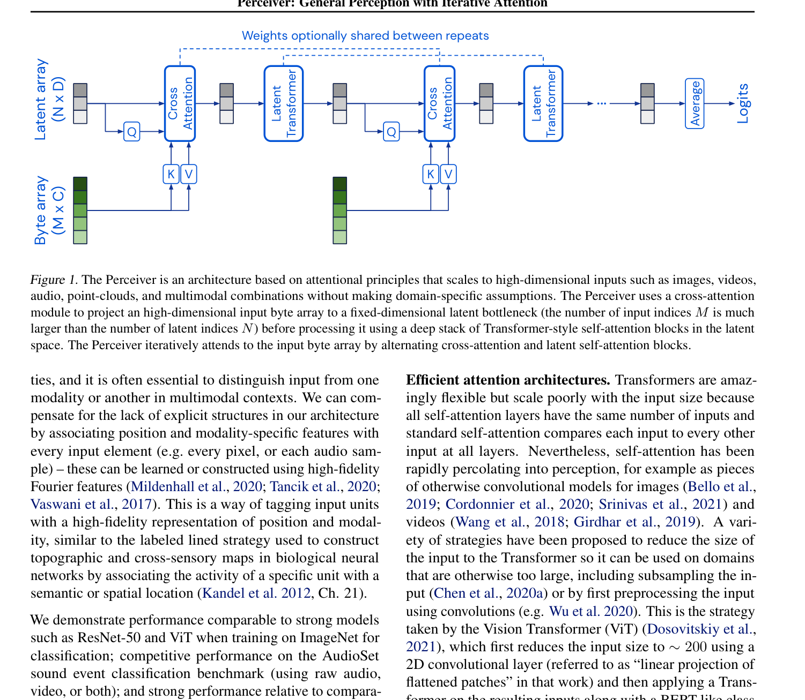
Figure 1: Perceiver 架构概览。使用固定数量的 latent array 通过 cross-attention 从可变长度的输入字节数组中提取信息，再通过 self-attention 层进行迭代处理。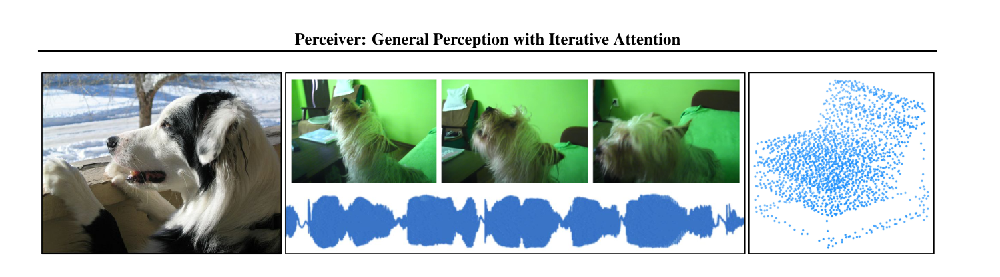
Figure 2: Perceiver 架构可以直接应用于不同模态的数据，无需针对特定领域进行架构修改。左：ImageNet 图像分类；中：AudioSet 视频和音频；右：ModelNet40 3D 点云分类。2. Flamingo 中的 Perceiver Resampler (Alayrac et al., 2022)
📄 论文：arXiv:2204.14198
Flamingo 面临的核心问题： - 需要处理可变数量的视觉特征（不同图片可能产生不同数量的 patches） - 需要将视觉特征高效地注入冻结的语言模型 - 视觉特征数量不固定，但语言模型的输入长度需要控制
Perceiver Resampler 的设计（Flamingo 论文第 4 页）：
可变数量的视觉特征（如 256 个、576 个、1024 个）
↓
┌─────────────────────────────────────┐
│ Perceiver Resampler │
│ - 64 个可学习的 latent queries │
│ - 多层 Cross-Attention │
│ - 将变长输入压缩为固定长度输出 │
└─────────────────────────────────────┘
↓
固定数量的视觉 tokens（64 个）
↓
注入语言模型
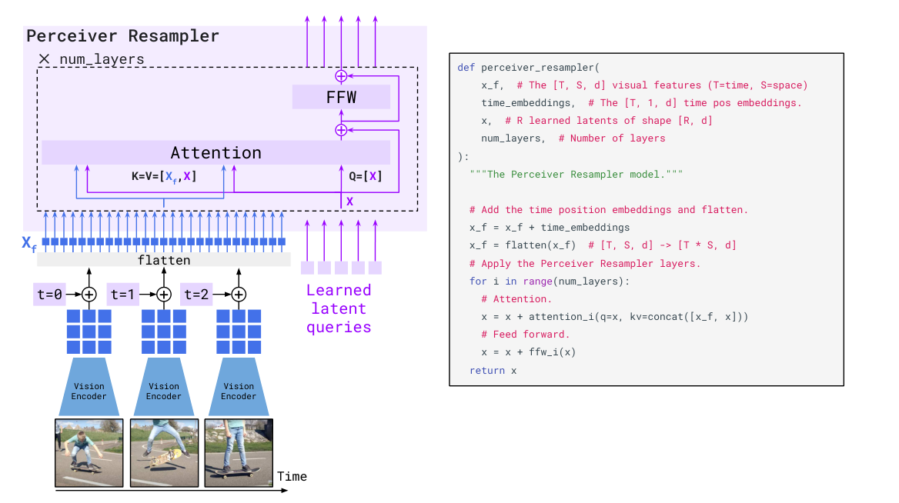
Figure 5: Perceiver Resampler 模块将 Vision Encoder 输出的可变大小 spatio-temporal 视觉特征映射为固定数量的输出 token（图中示意 5 个）。该 Transformer 模块使用可学习的 latent queries 通过 cross-attention 从视觉特征中提取信息。为什么叫 "Resampler"？ - 将可变长度的输入"重采样"为固定长度的输出 - 类似于信号处理中的重采样：不同采样率的信号 → 统一采样率
3. 技术演进路线
Transformer (2017)
↓ Cross-Attention 机制
Perceiver (2021)
↓ 用固定长度 latent 处理变长输入
Flamingo (2022)
↓ 首次用于多模态，处理可变视觉特征
BLIP-3 (2024)
↓ 支持任意分辨率策略
核心思想：用固定数量的可学习 queries 通过 cross-attention 从可变长度的输入中提取信息，实现信息压缩和长度归一化。
核心设计¶
论文用 Perceiver Resampler 完全替代了 BLIP-2 的 Q-Former。Perceiver Resampler 的结构如下：
ViT 输出的视觉特征（可变长度，取决于图像分辨率 / tile 数量）
↓
┌─────────────────────────────────────────────────────┐
│ Perceiver Resampler（默认 depth=6, heads=16） │
│ - 128 个可学习 latent queries（num_latents） │
│ - PerceiverAttention：latents 做 Q，视觉特征做 K/V │
│ - 输出投影到 LLM embedding 维度（dim_inner） │
└─────────────────────────────────────────────────────┘
↓
压缩后的视觉 tokens（每个图像 patch 输出 128 tokens）
↓
送入 LLM
Figure 2: BLIP-3 架构概览。Free-form 输入（图像+文本）通过 Perceiver Resampler 压缩后输入 LLM，支持多模态理解和生成。
关键设计细节：
- 可学习 queries：源码中默认使用 128 个 learnable query embeddings（
num_vision_tokens=128）。对每个 384×384 tile，SigLIP 输出 27×27=729 个 patch tokens，经 Perceiver Resampler 后变为 128 个视觉 tokens，压缩比约 5.7× - 🚗变长输入支持：Perceiver Resampler 被设计为能够处理可变长度的输入序列。当输入高分辨率图像时，ViT 会产生更多的 patch tokens，Perceiver Resampler 能够有效地将这些变长序列聚合为固定数量的输出 tokens
为什么用 Perceiver Resampler 替代 Q-Former？
| 对比 | Q-Former (BLIP-2) | Perceiver Resampler (BLIP-3) |
|---|---|---|
| 结构复杂度 | 复杂（单 Transformer + 独立 query FFN，32 queries） | 简单（单 Transformer，128 个 queries） |
| 训练目标 | 三种损失（ITM, ITC, ITG） | 单一损失（自回归文本生成） |
| 可扩展性 | 低（结构固定，难以扩展） | 高（结构简单，易于扩展） |
| 变长输入支持 | 不支持（固定 32 queries） | 支持（可变长度输入，固定数量输出） |
消融实验结果（论文 Figure 7a / Table 5）： - Perceiver Resampler 的 patch-wise sampling 在 OCR 任务上优于 fixed-sampling 和 MLP 投影层 - Fixed-sampling 效果不如 patch-wise sampling，论文推测原因有二：(a) 压缩比过高，丢失文本丰富的视觉信息；(b) Perceiver Resampler 对不同图像块的拼接序列处理效果不佳
2.3 Any-Resolution¶
核心思想：采用动态高分辨率图像编码，在保留细节和控制 token 数量之间取得平衡。
术语澄清：本节中提到的"patch"指的是将原图切分成的大块图像区域（每个 384×384 像素），更准确的称呼是 "tile"（图像块） 或 "crop"（裁剪块），与 ViT 内部将图像切成的最小编码单元（14×14 像素的 patch token）完全不同。
| 概念 | 传统 ViT Patch | BLIP-3 Any-Resolution Tile |
|---|---|---|
| 尺寸 | 14×14 像素（SigLIP patch14） | 384×384 像素 |
| 作用 | ViT 内部的最小特征提取单元 | 送入 ViT 的完整输入图像单元 |
| 数量 | 一张 384×384 图 → 729 个 patches | 论文 Stage-2 最多 12 个 tiles；开源示例默认最多 5 个 tiles（base + 2×2 / 3×1 / 1×3） |
| 编码方式 | 线性投影 + 位置嵌入 | 每个 tile 独立通过完整的 SigLIP ViT |
为什么选择 384×384？ - 复用预训练权重：SigLIP 是在 384×384 分辨率上预训练的，将 tile 设为 384×384 可以直接冻结并使用原始 ViT 权重，无需任何插值或微调视觉骨干 - 语义完整性：384×384 已经是一个包含丰富语义信息的完整图像区域（而非一个纹理碎片） - 计算可控：如果 tile 太小，处理一张 1536×1536 的图需要几十个 tile，显存爆炸；如果太大，则失去了"切分"的意义
两者的关系：原图 → 切分为多个 image patches（tiles，384×384）→ 每个 tile 独立送入 ViT → ViT 再将每个 tile 切为 27×27 = 729 个 ViT patch tokens（SigLIP patch14）。
具体实现：
输入图像（任意尺寸，论文 Stage-2 长边 ≤ 1536px）
↓
┌─────────────────────────────────────────────────────────┐
│ Any-Resolution 策略 │
│ 1. 生成 downsized original image（提供全局信息） │
│ 2. 将原图切分为多个 image patches（每个 384×384） │
│ （论文最多 12 个 patches；开源示例默认 grid 为 │
│ (1,2),(2,1),(2,2),(3,1),(1,3)，即最多 5 个） │
│ 3. 所有 patches 和缩略图分别独立送入 ViT 编码 │
└─────────────────────────────────────────────────────────┘
↓
每个 image patch 独立通过 Perceiver Resampler 压缩
↓
所有压缩后的 tokens 拼接 → 送入 LLM
全局缩略图如何获取¶
源码 open_flamingo/train/any_res_data_utils.py 中的 process_anyres_image 把原图直接 resize 到 384×384，作为第一个 patch（image_original_resize），然后才接上高分辨率切分出的 tiles：
processor_size = processor.transforms[0].size
image_original_resize = image.resize((processor_size[0], processor_size[0]))
image_patches = [image_original_resize] + patches
也就是说，全局缩略图是直接 resize 到 384×384 的正方形图像，不保持原始长宽比，因此会有一定形变；它的作用是提供全局语义上下文，细节则由后续的真实分辨率 tiles 补充。
为什么需要这个缩略图？ - 多个高分辨率 tile 只保留局部信息，容易丢失整张图的全局布局与场景上下文 - 一个低分辨率的完整图可以帮助模型理解“这张图整体在说什么” - 缩略图与 tiles 分别编码后再拼接，兼顾全局与局部
为什么需要 Any-Resolution？
- 传统固定分辨率方案：丢失细节（如小文字、细粒度物体）
- 简单提高分辨率：导致 token 数量爆炸，计算成本过高
- Any-Resolution：在保留细节和控制 token 数量之间取得平衡
- Downsized original image 提供全局上下文
- 多个 image patches 保持原始分辨率，提供局部细节
- Perceiver Resampler 压缩后送入 LLM，控制 token 数量
关键参数： - Any-Resolution 网格：最多 12 个 image patches - 长边最大像素：1536px - Stage-1 基础分辨率：384×384（与 SigLIP 默认分辨率对齐）
2.4 训练流程¶
论文描述的完整训练流程：
Stage-1：基础分辨率预训练
- 数据规模：约 100B 多模态 tokens（来自 MINT-1T、OBELICS、BLIP3-KALE、BLIP3-OCR-200M、BLIP3-GROUNDING-50M 等混合）
- 分辨率：384×384（固定）
- 目标：基础图文对齐
- 训练目标：单一的自回归文本生成损失（源码中 NextTokenPrediction / SupervisedPrediction）
Stage-2：高分辨率预训练 - 数据：在 Stage-1 基础上加入 BLIP3-OCR-HD-30M 等高分辨率、文本丰富的数据 - 分辨率：Any-Resolution 策略（论文最多 12 个 patches，长边最大 1536px） - 目标：引入高分辨率能力
Stage-3：单图指令微调 (Single-Image SFT) - 数据：约 300 万条公开可用的指令微调样本 - 目标：提升单图理解能力，保持高分辨率处理能力
Stage-4：交错多图指令微调 (Interleaved Multi-Image SFT) - 数据：混合多图和单图指令数据（防止单图能力退化） - 目标：增强多图理解、多模态上下文学习等能力
与 BLIP-2 的区别：BLIP-2 只有两阶段（表示学习 + 生成学习），BLIP-3 细化为四阶段，逐步引入高分辨率和多图能力；且 BLIP-3 不再冻结 LLM，而是对视觉编码器以外的参数进行端到端训练。
3. 实验¶
3.1 主要结果¶
论文在多个基准上评估了 BLIP-3 的性能：
Zero-shot VQA（Table 1）： - BLIP-3-4B 在 VQAv2 test-dev 上达到 74.5% - BLIP-3-14B 在 VQAv2 test-dev 上达到 77.2% - 在同等规模的开源 LMM 中表现出竞争力的性能
Image Captioning（Table 2）： - BLIP-3 在 COCO Captioning 和 NoCaps 上表现优异 - 特别是在需要细粒度理解的 OCR 和图表理解任务上，BLIP-3 显著优于 BLIP-2
3.2 消融实验¶
Vision Token Sampler 的选择（Table 3）： - Perceiver Resampler 优于简单的 MLP 投影层 - MLP 缺乏对变长序列的聚合能力 - Perceiver Resampler 通过 Cross-Attention 有效聚合可变长度的视觉特征
Any-Resolution 的效果（Table 4）： - Any-Resolution 策略在高分辨率任务上显著优于固定分辨率 - 特别是在 OCR 和图表理解任务上，Any-Resolution 带来了显著的性能提升
3.3 多图理解能力¶
论文展示了 BLIP-3 在交错多图输入上的能力： - 能够理解多个图像之间的关系 - 支持多模态上下文学习（multimodal in-context learning） - 在多图推理任务上表现优异
4. 总结¶
4.1 核心贡献¶
-
精选开源框架：提供了完整的、可复现的 LMM 框架，包含数据集、训练配方、模型架构和模型权重（4B 和 14B），推动 LMM 研究的透明度和可复现性
-
架构简化：用 Perceiver Resampler 替代复杂的 Q-Former，训练目标从三种损失简化为单一的自回归文本生成损失，大幅降低训练复杂度
-
任意分辨率策略：采用动态高分辨率图像编码，在保留细节和控制 token 数量之间取得平衡，支持高分辨率图像理解
-
高效 Token 压缩与多图支持：Perceiver Resampler 充当下采样器，压缩比超过 5 倍，显著降低 LLM 处理多图或高分辨率图像时的计算开销，使模型能够高效支持交错多模态数据
-
四阶段训练流程：基础分辨率预训练 → 高分辨率预训练 → 单图指令微调 → 交错多图指令微调，逐步引入高分辨率和多图能力
4.2 局限性¶
- 模型规模：论文发布的 4B 和 14B 模型在超大规模任务上仍有差距
- 训练资源：四阶段训练流程需要大量计算资源
- 多图理解：虽然支持多图输入，但在复杂的多图推理任务上仍有提升空间
4.3 与相关方法的对比¶
vs BLIP-2： - BLIP-2 使用复杂的 Q-Former（ITM+ITC+ITG 三种损失），BLIP-3 用简单的 Perceiver Resampler（单一自回归损失） - BLIP-2 仅支持单图，BLIP-3 支持交错多图 - BLIP-2 固定分辨率，BLIP-3 支持 Any-Resolution
vs LLaVA： - LLaVA 使用简单的 MLP 投影层，BLIP-3 使用 Perceiver Resampler（更强的空间位置感知） - LLaVA 仅支持单图，BLIP-3 支持交错多图 - BLIP-3 在 OCR 和图表理解等细粒度任务上显著优于 LLaVA
vs Flamingo： - Flamingo 使用 Perceiver Resampler + Gated Cross-Attention，BLIP-3 仅使用 Perceiver Resampler - Flamingo 模型规模更大（80B），BLIP-3 更轻量（4B/14B） - BLIP-3 在同等规模下性能接近或优于 Flamingo
附录：架构演进对比¶
Figure 2: BLIP 预训练架构与目标
BLIP-1 主要创新点
- CapFilt 数据清洗方法：提出 Captioner + Filter 的双模型框架，用 captioner 生成合成描述、用 filter 过滤低质量文本，有效解决了网络爬取数据（web text）的噪声问题。
- 多模态混合编码器（MED）：统一架构同时支持基于理解的 VLM（Vision-Language Model）和基于生成的 VLGM（Vision-Language Generative Model），通过参数共享实现多任务学习。
- 三目标预训练：ITC（图文对比）+ ITM（图文匹配）+ LM（语言建模），在同一个模型中同时优化理解与生成能力。
- Bootstrap 思想的首次提出：通过预训练的 BLIP 模型生成伪标签，迭代提升数据质量，为后续 BLIP-2 的 bootstrap 范式奠定基础。
Figure 2: Q-Former 架构与第一阶段预训练目标
BLIP-2 主要创新点
- 提出了通用的 Bootstrap VLP 范式：首次成功地将冻结的图像编码器和冻结的 LLM 同时有效地用于视觉-语言预训练，开创了"冻结单模态模型 + 轻量桥接模块"的新研究范式。
- 设计了 Q-Former + 两阶段预训练策略：
- 第一阶段通过 ITC+ITM+ITG 三目标让 queries 学会提取语言相关的视觉表示；
- 第二阶段通过 FC 层将 queries 输出作为 soft visual prompts 注入 LLM；
- 信息瓶颈设计有效缓解了灾难性遗忘。
Figure 2: BLIP-3 架构概览
BLIP-3 主要创新点
- 用 Perceiver Resampler 替代 Q-Former：不再依赖 ITM/ITC/ITG 三种预训练目标，仅靠单一自回归文本损失训练视觉-语言连接器，结构更简单、更易扩展。
- Any-Resolution 高分辨率编码：图像被切分为多个 384×384 的 tile（论文 Stage-2 最多 12 个，长边最大 1536px），每个 tile 独立过冻结的 SigLIP ViT，再与全局缩略图拼接，兼顾细节保留与 token 数量控制。
- patch-wise token 压缩：每个 tile 产生 27×27=729 个 SigLIP patch tokens，经 Perceiver Resampler 压缩为 128 个视觉 tokens，压缩比约 5.7×，使高分辨率或多图输入能在 LLM 中高效处理。
- 交错多图（interleaved image-text）支持：模型能处理自由形式的多图-文本交错序列，支持多图推理、跨图关系理解与多模态上下文学习。
- 端到端训练（除 Vision Encoder）：与 BLIP-2 冻结 LLM 不同，BLIP-3 只冻结视觉编码器，LLM 与 Perceiver Resampler 一起参与训练，提升模态对齐与任务适应能力。
关于 BLIP-2 可训练参数的说明¶
BLIP-2 论文中同时出现了两个可训练参数数字：~188M 和 ~103M–108M。这是因为两个数字的统计口径不同：
- ~188M：论文正文/Table 1 中常作为代表性数字出现，指的是整个 Q-Former 模块的总参数量。Q-Former 是 BLIP-2 中新引入的可训练连接器，包含 BERT 双塔结构、32 个可学习 queries、以及内部 cross-attention 等。
- ~103M–108M：来自论文 Table 2 中各具体 variant 的
#Trainable Params列。Table 2 统计的是 Stage 2（将 Q-Former 接到冻结 LLM 上训练）时实际参与梯度更新的参数。这个数量比完整 Q-Former 少，因为 Stage 2 主要训练 Q-Former 输出到 LLM embedding 空间的投影层，以及 Q-Former 中需要适配 LLM 的部分；同时不同 LLM backbone（OPT 系列 vs FlanT5 系列、不同尺寸）的 hidden size 不同，导致投影层参数量有差异，因此各 variant 在 103M–108M 之间略有浮动。
简言之：188M 是 Q-Former 模块规模，103M–108M 是 Stage 2 各 variant 真实可训练参数。ViT 和 LLM 始终冻结，所以它们虽然占模型总参数量的大头，但不计入 #Trainable Params。
演进主线¶
- 训练范式：端到端 + 数据自举 → 模型自举（冻结模型）→ 指令微调 → 端到端细粒度（除 Vision Encoder）
- BLIP-1 需要端到端训练整个模型，同时用 CapFilt 做数据自举/清洗
- BLIP-2 开创了冻结单模态模型 + 轻量连接器的模型自举范式
- InstructBLIP 在 BLIP-2 基础上加入指令微调
-
BLIP-3 进一步引入细粒度视觉特征，且除 Vision Encoder 外全部端到端训练（含 LLM）
-
视觉特征处理：全部 patch → 32 queries（粗粒度）→ 32 queries（指令感知）→ Perceiver Resampler 压缩（>5× 压缩比）
- BLIP-1 使用 ViT 的全部 patch features
- BLIP-2 通过 Q-Former 压缩为 32 个高度抽象的 token
- InstructBLIP 保持 32 个 token 但使其指令感知
-
BLIP-3 用 Perceiver Resampler 替代 Q-Former，实现更高效的 token 压缩，支持多图和高分辨率
-
任务覆盖：固定任务 → Zero-shot → 通用指令跟随 → 理解 + 生成
- BLIP-1 支持 Captioning、VQA、Retrieval 等固定任务
- BLIP-2 展现了强大的 zero-shot 能力
- InstructBLIP 通过指令微调实现通用化，覆盖 26+ 任务
-
BLIP-3 进一步统一理解与生成能力
-
数据与训练：CapFilt 数据自举/清洗 → 大规模图文对 → 指令微调数据 → 精选框架与四阶段训练
- BLIP-1 提出 CapFilt 解决数据噪声问题（数据层面的 bootstrap）
- BLIP-2 利用大规模图文对进行模型自举（冻结 Vision Encoder + LLM）
- InstructBLIP 构建了 665K 指令微调数据
- BLIP-3 构建了完整的精选开源框架，包含四阶段训练流程（基础预训练 → 高分辨率预训练 → 单图指令微调 → 多图指令微调）
核心洞察¶
- BLIP-1：证明了统一架构和数据自举清洗（CapFilt）的重要性
- BLIP-2：证明了冻结大模型 + 轻量连接器的可行性，开创了模型层面的 bootstrap 范式
- InstructBLIP：证明了视觉特征应该根据指令动态调整，实现了通用化
- BLIP-3：证明了架构简化和可复现性的重要性，通过 Perceiver Resampler 替代 Q-Former、统一训练目标、支持多图和任意分辨率，推动了 LMM 研究的透明度和可扩展性
BLIP 系列展示了视觉-语言预训练从「端到端 + 数据自举」到「模型自举」、从固定任务到通用指令、从复杂架构到简化架构的完整演进路径，是多模态大模型领域最具影响力的研究系列之一。
附注：BLIP 系列中 "Bootstrap" 的含义¶
BLIP-1 和 BLIP-2 的论文标题里都用了 Bootstrapping Language-Image Pre-training，但二者指的并不是同一件事：
1. BLIP-1：数据层面的 Bootstrap（CapFilt）¶
BLIP-1 标题为：
“BLIP: Bootstrapping Language-Image Pre-training for Unified Vision-Language Understanding and Generation”
这里的 bootstrap 指的是 CapFilt（Captioning and Filtering）：用模型自己生成 caption，再用另一个模型过滤掉噪声 caption，从而“自举”出高质量的训练数据。它发生在数据侧，不改变模型训练方式（BLIP-1 仍是端到端训练视觉和语言编码器）。
2. BLIP-2：模型层面的 Bootstrap（冻结预训练模型）¶
BLIP-2 标题为：
“BLIP-2: Bootstrapping Language-Image Pre-training with Frozen Image Encoders and Large Language Models”
这里的 bootstrap 指的是利用已经训练好的、冻结的预训练单模态模型，只训练一个轻量连接模块，从而构建出多模态能力。它发生在模型侧。
- 被 bootstrap 的对象：现成的冻结单模态大模型，即 EVA-CLIP ViT-g/14 / CLIP ViT-L/14（图像编码器）和 OPT / FlanT5（语言模型）。
- 新建/训练的模块：轻量的 Q-Former，用于桥接两个冻结模型之间的模态鸿沟。
- 目的：避免从头训练巨大的多模态模型，以极低的可训练参数成本获得强大的视觉-语言能力。
论文原文也明确写道：
“This paper proposes BLIP-2, a generic and efficient pre-training strategy that bootstraps vision-language pre-training from off-the-shelf frozen pre-trained image encoders and frozen large language models.”
小结¶
| BLIP-1 CapFilt | BLIP-2 Bootstrap | |
|---|---|---|
| 层面 | 数据 | 模型 |
| 做法 | 生成伪 caption → 过滤噪声 | 冻结 Vision Encoder + LLM，只训练 Q-Former |
| 目的 | 提升训练数据质量 | 降低训练成本，复用已有单模态大模型能力 |
因此，BLIP-2 的 bootstrap 不是“左脚踩右脚升天”式的自我生成，而是“站在巨人肩膀上”——用现成的单模态大模型搭出多模态能力。